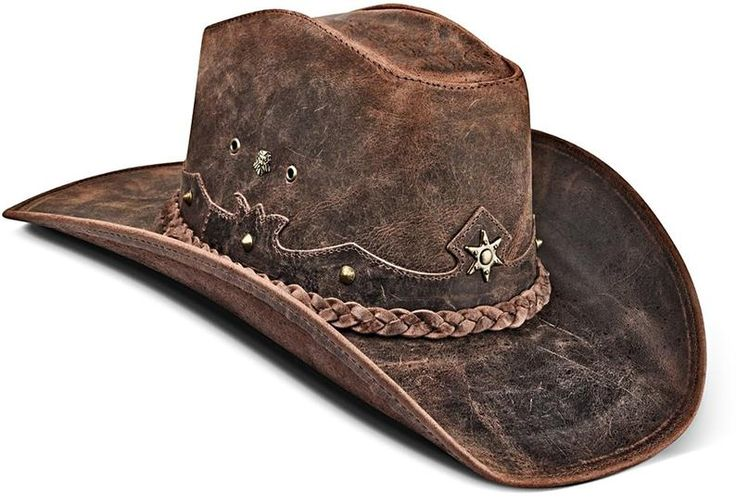

Why I Haven’t Posted in a While... But I’m Back!
Hello, wonderful readers! I know, I know, it’s been a while since my last post. You might have been wondering, “Did they get lost in a sea of datasets? Or perhaps they took up fishing full-time?” Well, I did catch some impressive fish, but I’m happy to report that I haven’t abandoned my love for all things data. Life got busy, projects piled up, and before I knew it, my blog started to gather digital dust. But worry not, I’m back with some exciting content to share with you!

Today, I want to dive into the fascinating world of the Demographic and Health Surveys (DHS) data. If you’ve ever worked with this dataset, you’ll know it’s a treasure trove of information that can tell you everything from health indicators to demographic trends across various countries. This data is incredibly important for researchers, policymakers, and anyone interested in understanding population health and demographic patterns. However, if you’ve ever tried to make sense of those cryptic column headers, you might have felt like you were decoding an ancient script. Fear not! I’m here to guide you through converting those headers into something more human-friendly and to show you how to pattern search the names with ease.
What is DHS Data, and Why Should You Care?
The DHS program provides data that’s crucial for decision-making in health policy and planning. These surveys cover a wide range of topics, including fertility, maternal and child health, nutrition, and much more. They’re used by governments, NGOs, and researchers worldwide to monitor and evaluate health programs, develop policies, and conduct research. In short, if you’re involved in any kind of health or demographic research, DHS data is like the holy grail.
The Mystery of the Cryptic Column Headers
One of the biggest challenges when working with DHS data is the column headers. Instead of straightforward names like “Age” or “Number of Children,” you get something like “V012” and “V034.” It’s like trying to read your cat’s mind. But don’t worry; with a few tricks, you can convert these mysterious codes into meaningful names.
Converting Values in Headers to Actual Names
First things first, you need to get your hands on the DHS recode manual, which is essentially the Rosetta Stone for these datasets. This manual will help you translate those enigmatic codes into understandable variable names using R. Here’s a step-by-step guide:
#First load the data and package
library(haven) # for loading .dta data
library(tidyverse) #for manipulation
library(labelled) #for accessing the labels
library(purrr) #for parrallet computation
library(data.table)
library(janitor)
# reading in sav data -- women data
df1 <- haven::read_dta("DT/KEBR8BFL.dta")
# Define the harvest function
# This function is for converting names from the stata value format
# to the column heads for easy searching
rename_fun <- function(df){
var_labels <- var_label(df)
new_names <- purrr::map_chr(df, ~ attr(.x, "label"))
new_names[is.na(new_names)] <- names(df)[is.na(new_names)] # Retain original names for columns without labels
names(df) <- new_names
data_df <- as.data.table(df)
return(data_df)
}
# clean the names
df1 <- rename_fun(df1) %>%
janitor::clean_names()
# Find the names with a pattern format using data.tables's %like%
names_df1 <- names(df1)[names(df1) %like% "residence"]
print(names_df1)
# to get the values - use print_labels() from the labelled packega
print_labels(names_df1$religion)Working with DHS data can be daunting at first, but with the right approach, you’ll soon find yourself navigating it like a pro. And remember, data is only as good as your ability to understand and use it effectively. So take the time to decode those headers and make your analysis more meaningful.